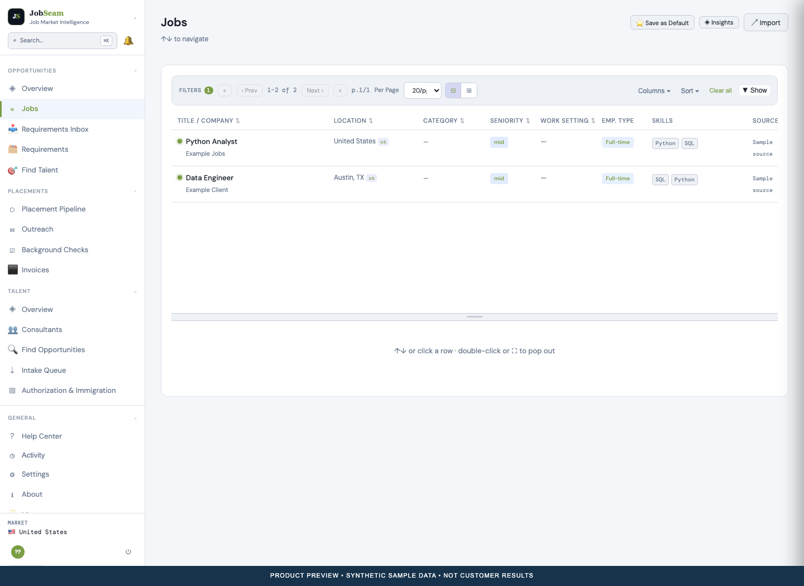

JOBSEAM CAMPAIGN KIT
The connection and the work.
Prepared assets for a blog, social posts and a product flyer. Nothing in this folder has been published or sent by the generators.
Read the blog preview · Download the two-page flyer · Open the flyer · Copy blog Markdown

Light-theme product screens
All screenshots use synthetic sample data. Click a screen to inspect it at full size.
Find the opportunity


Know the person

Review the match

Follow the placement

Review document access

Features depend on configuration and provider access. Screenshots are illustrative product views, not customer results or a security audit.